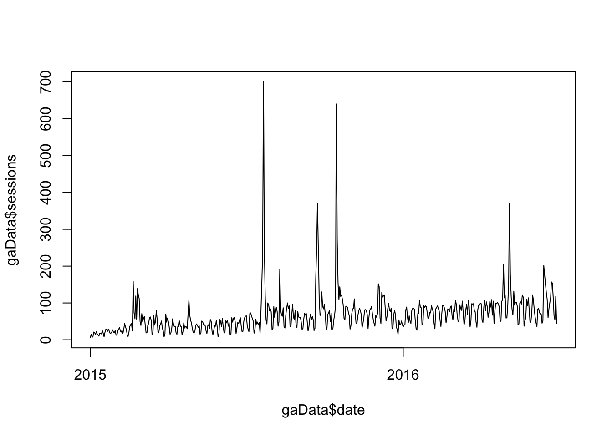

Let’s start with getting familiar with the basics of moving around RStudio and some of the basics of R itself. Go ahead and launch RStudio!
We’re going to walk through some basics so you get a good sense of the different areas of the environment:
Create a new script by selecting File>>New File>>R Script (we’ll cover projects in a bit).
Let’s start with some simple math. In the console, type 12^2 and press
12^2## [1] 144Now, let’s actually assign a value to a variable from the console by typing myVar <- 12^2.
myVar <- 12^2In R, assignment of values uses <-.
Look in the Environment tab in the top right pane, you should now see your variable:
You’ve just created a variable and stored it in your working space…even though you haven’t actually created a script! So, let’s do some work with our script.
In the top left pane, enter myVar <- myVar * 10. Nothing will happen, because this is just a script. It hasn’t been executed yet. Click Source to run the script. Now, check out the Environment tab:
This is a simple illustration of working in both the console and the script to work on the same environment.
In the first part of this exercise we assigned a single numeric value to an object. We can also (and often will) want to work with multiple values. We don’t need a 1:1 relationship for each value and an object. We can use a vector to store multiple values in a single object.
Two key concepts here (we’ll dive deeper into these classes.html#multi-classes: * Vectors get used quite a bit, but, with much of the data we work with, we actually work with data frames, which will look much more familiar, in that they are, essentially like Excel sheets on steroids. Wrapping your head around the differences between vectors, data frames, and a few other types of objects (lists and *matrices**) is both critical…and confusing. * Vectors get created using the c() function. The “c” is for “combine,” because we’re combining multiple values into a single vector.
So, let’s do a little work with vectors:
In the Console, type myVector <- c(1,2,3,4). You will see myVector appear in the Environment pane.
myVector <- c(1,2,3,4)Type myVector in the Console to display the vector in the console.
myVector## [1] 1 2 3 4What if we wanted to cube each of these values? Type myVector^3. This is an operation performed on an entire vector. It’s not particularly exciting in this example, but it shows one of the fundamental aspects of R that we will come back to again and again. What we did not have to do was “loop through the vector and cube each value.” Rather, we performed an operation on the entire vector and we did it all at once.
myVector^3## [1] 1 8 27 64In R’s mind, both myVar and myVector are actually vectors. myVar is simply a vector of length 1, while myVector is a vector of length 4. Let’s illustrate that and pick up a few more basics of the R/RStudio environment.
Type typeof(myVar). typeof is a function that returns the type of an object.
typeof(myVar)## [1] "double"Type typeof(myVector). Note that it is the identical type as myVar.
typeof(myVector)## [1] "double"Now, type length(myVar) and then length(myVector). Note that this is where the two objects differ.
length(myVar)## [1] 1length(myVector)## [1] 4We’ve now worked with c(), typeof(), and length(). That’s just the beginning!
We’re going to do a few things here that wouldn’t exactly be how you would work typically. But, that’s okay: * We’ll get to accessing web analytics data via APIs in a bit, but we’re going to just work with a static data export for now. * We’re working in a web-based environment rather than your local machine, which makes things a little different.
Download the .csv file at http://bit.ly/rSampleGA. Pay attention to to where this file – td.csv – gets stored.
Click Upload File in the lower right pane in RStudio and upload td.csv. You should now see it in the Files tab.
We’re going to create an actual script now, so either just delete everything in the script you originally created or select File>>New File>>R Script. Either way, then select File>>Save and name the file myFirstScript. The script is being saved in your working directory and now appears – along with td.csv in the Files tab. Now, let’s start writing some script!
The first thing we want to do is load our data into a data frame. A data frame is, essentially, just a table. Let’s call our data frame gaData and load the data from td.csv into it. We use the read.csv() function for this, so add the following line of code to your script (loading data is something else we will get into in more detail later:
gaData <- read.csv("td.csv", stringsAsFactors = FALSE)That stringsAsFactors = FALSE is something you will run into quite a bit in various functions. Let’s just ignore it for now.
We can go ahead and run this script. Go ahead and click Source. It doesn’t look like much happened, but, if you now check your Environment window, you will see a new object called gaData. Double-click on that, and the gaData data frame will load in a new tab next to your script.
We’re going to hop back down to the console to explore some of the most common ways we can access data in a data frame.
Type in gaData in the console. This will simply quickly scroll all of the contents of the data frame.
Sometimes, we just want to see the basic structure of an object – we don’t need to see all of the data. For that, try head(gaData). This shows just the first few rows (and head() is a function; type ?head() to read the help for it!).
We will get into the many different ways to access this data accessing.html, but it’s worth a quick exploration of some of the most common ways.
Let’s look at just the sessions column. We do that using $ notation: try gaData$sessions.
Since the data frame is made up of rows and columns, we can also access values using a row/column notation (similar to R1C1 notation in Excel). To view the value in the 5th row and the 3rd column of the data, type gaData[5,3].
We can also use this notation to grab an entire row or an entire column simply by using the row or column index blank. To grab the entire 5th row, type gaData[5,].
Using this same notation, we can also add conditions to pull subsets of the data. For instance, to view all of the rows where there were greater than 100 sessions, enter gaData[gaData$sessions > 100,].
Let’s say we actually want to use that subset of data for something else. We want to add it to our script to get that subset of data and assign it to a new object. We can use the console and the script window together:
Press the up arrow to get gaData[gaData$sessions > 100,] to reappear.
Now, highlight it and cut or copy it.
Click into the next line in your script and enter gaDataOver100 <- and then paste in gaData[gaData$sessions >100,].
Highlight just that row and click Run. You now have a new object in your Environment that you can inspect.
Now, can you:
sum() function)?summary() function)?We will come back to visualizations later in the day, but let’s at least add a simple line chart of sessions by adding two lines of code to our script.
The first line converts the date values to, well, actual date values. Dates can be tricky, but there are a lot of tips and tools (and even a package called lubridate() to help with that):
gaData$date <- as.Date(gaData$date)The second line we’ll add will actually plot the data. There are shorter ways to write this out, but let’s go with this:
plot(x = gaData$date, y = gaData$sessions, type = "l")Now, you can either highlight just the two new rows and click Run, or you can click Source to run the entire script. The end result will be a barely-formatted, ugly label line chart:

Don’t judge a platform by your first visualization. Even with the basics of plot(), this chart can be a lot better, but we’re actually going to primarily focus on ggplot2() when it comes to visualizations. So, let’s call this initial exercise a wrap! Congratulations! You’ve loaded, manipulated, and plotted data with R!